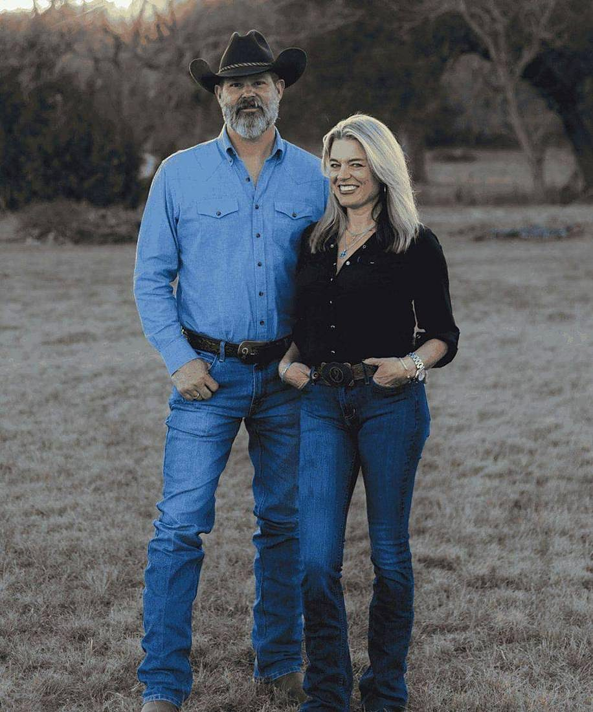
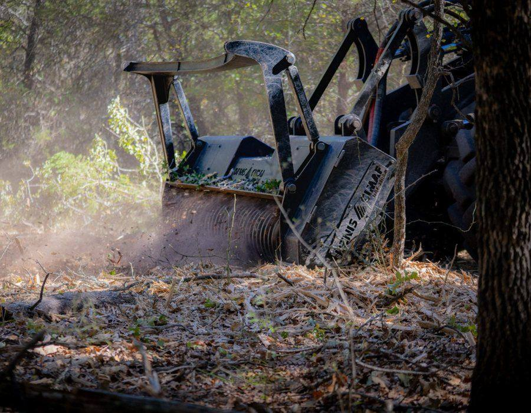
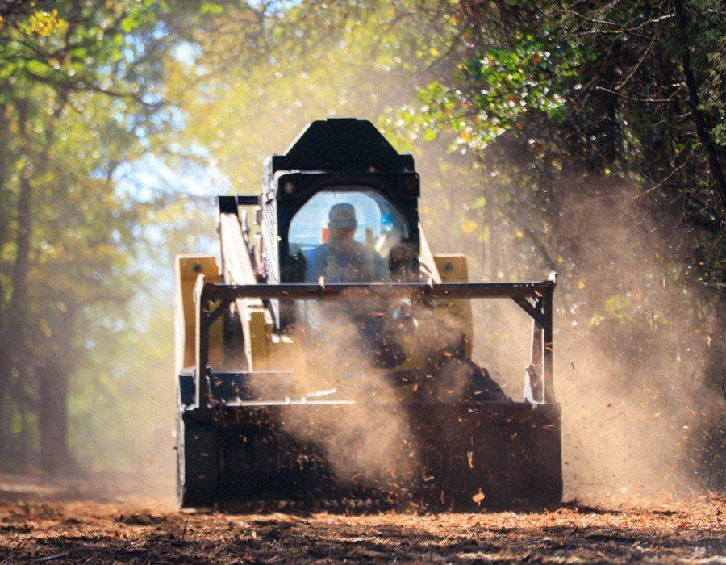
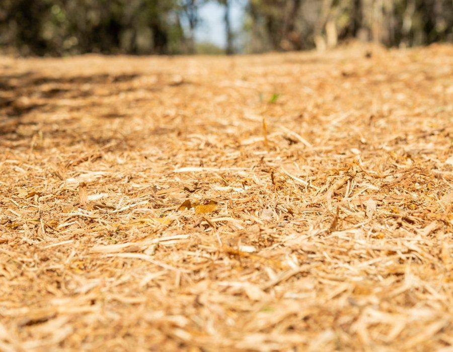

Who We Are
Serving Spring Branch, Bulverde, New Braunfels, Canyon Lake, Boerne, San Antonio, San Marcos, the Texas Hill Country, and clients across Central Texas.

John & Camille Wheelock — founders of 9 Arrow Land Service.
Our Story
From his Texas ranching roots to his construction background, John was wired to found 9 Arrow with his wife, Camille, alongside their nine children. After building a successful custom home company, John expanded into land clearing — and rekindled a love for land development.
In 2014, a project with a developer and surveyor introduced forestry mulching into the business. It has since become our premier offering. Today, 9 Arrow is a trusted partner for clients seeking both large-scale clearing and precise survey-line work — always guided by excellence, efficiency, and respect for the land.
We're lifelong Texans with a deep appreciation for the native landscape. When we work a property, we treat it as if it were our own. With proper care, our work is designed to leave a legacy.
The 9 Arrow way
A Central Texas family business, built to last generations. We don't consider a job finished unless we're proud of the result.
What We Stand For
These nine Biblical core values are the building blocks of 9 Arrow, with Christ as our cornerstone.
We outdo one another in showing honor — to our team and every client we serve.
The land we serve is of immense value to us. We respect the environment in everything we touch.
Doing what's right no matter the circumstance — especially when no one is looking.
We communicate clearly and honestly, from estimating to on-site performance.
It's our greatest honor to earn the trust of our clients. We don't take it lightly.
We wake up humbled and grateful for the opportunity to serve our customers and team.
Service is woven into our name. We serve every customer's needs, large or small.
We pursue personal and team excellence in everything we do — heartily, as for the Lord.
Steady, careful, relentless work — the kind of effort that shows in a finished job.
The Work



It does not get better.
One operator who treats your land like their own — not a vendor who hands you off.
Request an Estimate